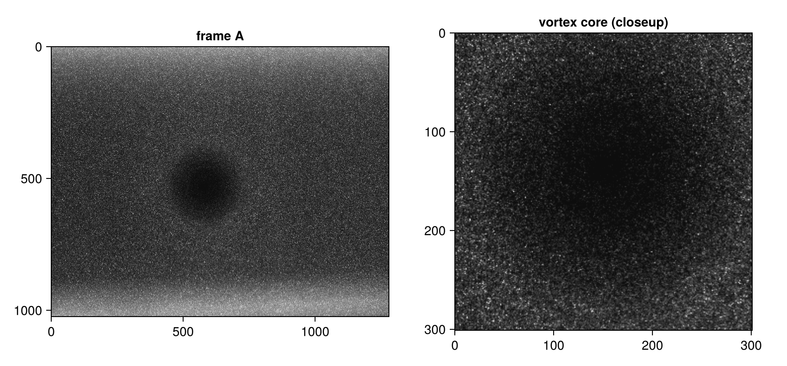
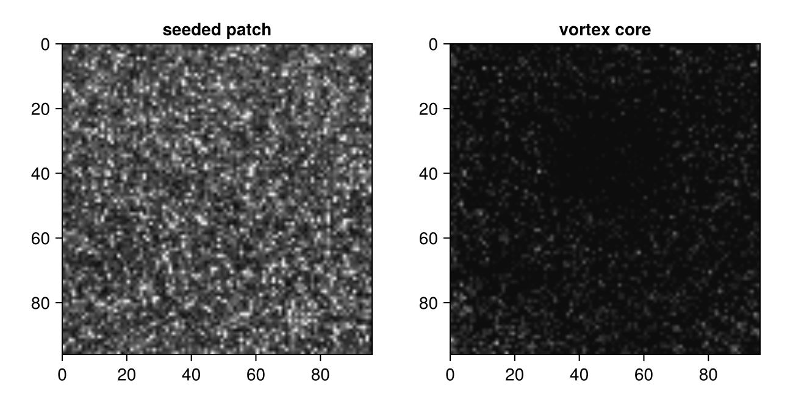
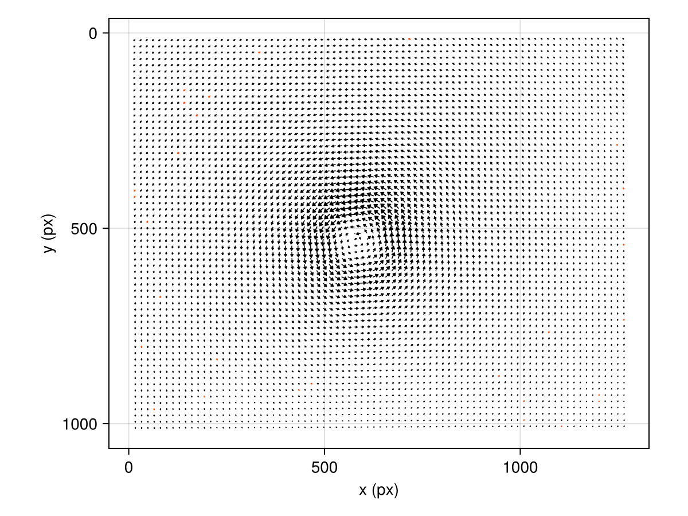
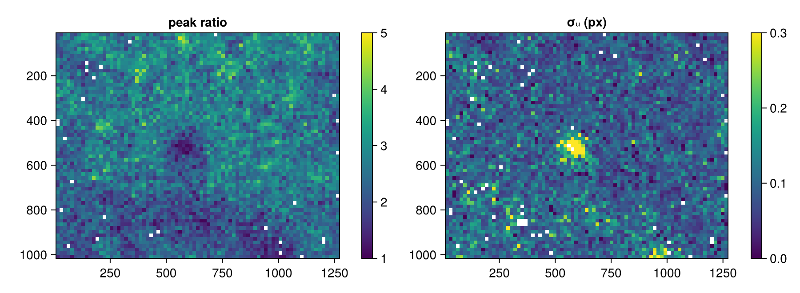
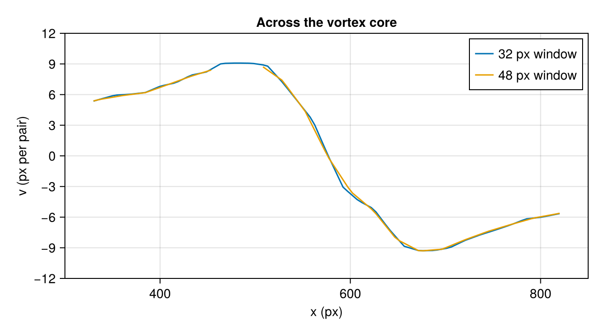

A real recording: tip vortex with seeding dropout
Analyze a wind-tunnel image pair to calculate a vector field and identify where its measurements are less reliable. You will inspect the images, then compare validation flags, peak ratios, and per-vector uncertainty.
The data is case A of the first International Particle Image Velocimetry (PIV) Challenge (Stanislas et al., 2003): a wing-tip vortex 1.64 m behind a transport aircraft half-model in the German–Dutch Wind Tunnels Large Low-Speed Facility (DNW-LLF), recorded by C. Kähler of the German Aerospace Center (DLR). The images contain strong velocity gradients, varying particle image sizes, and loss of seeding in the vortex core.
Load and inspect
load_image reads any FileIO-supported image (here 12-bit grayscale TIFF) into a Matrix{Float64} scaled to $[0, 1]$:
using Hammerhead
using Statistics: median, quantile
dir = joinpath(pkgdir(Hammerhead), "test", "reference_images", "A")
imgA = load_image(joinpath(dir, "A001_1.tif"))
imgB = load_image(joinpath(dir, "A001_2.tif"))
size(imgA), extrema(imgA)((1024, 1280), (0.0, 1.0))Inspect the particle images and illumination before choosing analysis settings:
using CairoMakie
let
fig = Figure(size = (860, 400))
ax1 = Axis(fig[1, 1]; title = "frame A", yreversed = true, aspect = DataAspect())
image!(ax1, imgA'; colormap = :grays)
ax2 = Axis(fig[1, 2]; title = "vortex core (closeup)", yreversed = true,
aspect = DataAspect())
image!(ax2, imgA[395:695, 425:725]'; colormap = :grays)
fig
end
Most of the image has dense seeding and large, bright particle images. Illumination varies across the frame: the row-wise mean intensity changes by a factor of four. The dark disk near the center is the vortex core, roughly 200 px across. Swirling flow has pushed most particles out of that region, so its vectors will have less particle information to use. Compare a seeded patch with the core at the same display contrast. Before looking at the vector diagnostics, which patch would you expect to give the clearer correlation peak?
let
fig = Figure(size = (650, 330))
for (i, (rows, cols, title)) in enumerate(((200:295, 200:295, "seeded patch"),
(497:592, 529:624, "vortex core")))
ax = Axis(fig[1, i]; title, yreversed = true, aspect = DataAspect())
image!(ax, imgA[rows, cols]'; colormap = :grays, colorrange = (0, 0.6))
end
fig
end
The core patch contains many fewer visible particles. Its vector may still pass a neighbor check, but its peak ratio and uncertainty can show the weaker measurement later in the tutorial.
Estimate displacement before choosing windows
Start with a coarse 96 px pass. This gives an approximate displacement range for choosing a finer schedule; it is not the field we will report.
preview = run_piv(imgA, imgB, PIVParameters(window_size = 96,
overlap = 48, padding = true, apodization = :gauss))
preview_ok = .!(preview.outliers .| preview.mask)
preview_shift = hypot.(preview.u[preview_ok], preview.v[preview_ok])
(p95 = round(quantile(preview_shift, 0.95); digits = 1),
largest = round(maximum(preview_shift); digits = 1),
valid = count(preview_ok))(p95 = 7.2, largest = 9.7, valid = 491)The upper end is around 10 px. A 64 px first window leaves that shift below a quarter of its width (16 px), a useful starting rule for correlation. Recheck the coarse field if it contains large patches of rejected vectors: its reported range might miss the fastest region. Refining to 32 px recovers more local structure. Repeating 32 adds the convergence sweep required by the uncertainty estimator:
passes = multipass_parameters([64, 32, 32];
padding = true,
apodization = :gauss,
uncertainty = true,
)
result = run_piv(imgA, imgB, passes)PIVResult{Float64}(79×63 grid, 28 outliers)plot_vector_field(result)
The in-plane field shows a tip vortex centered on the dark disk. The free-stream flow is perpendicular to the light sheet, so the measured in-plane motion is mostly swirl.
Judging a measurement without ground truth
There is no reference displacement field for this recording. Use these three diagnostics in PIVResult to assess the calculated vectors:
result.outliers: vectors rejected by validation (universal outlier detection by default; peak-ratio rejection requires an explicit threshold).result.peak_ratio: the height ratio of the primary to the secondary correlation peak. A low ratio means the displacement peak has a strong competitor.result.uncertainty_u/uncertainty_v: the Wieneke (2015) per-vector random-error estimate (Wieneke, 2015).
Start with the flags. Replaced vectors can still hold numerical values, so exclude outliers and masked windows when summarizing measured data:
count(result.outliers), length(result.outliers)(28, 4977)Fewer than one percent of the nearly 5000 vectors are flagged. Most flags are near the frame edges, with few in the sparsely seeded core. A core window can still pass validation if its remaining particles produce a vector consistent with its neighbors. Peak ratio and uncertainty show differences among the vectors that pass:
valid = .!(result.outliers .| result.mask);
let
fig = Figure(size = (900, 330))
pr = copy(result.peak_ratio)
pr[.!valid] .= NaN
ax1 = Axis(fig[1, 1]; title = "peak ratio", yreversed = true, aspect = DataAspect())
hm1 = heatmap!(ax1, result.x, result.y, pr'; colorrange = (1, 5))
Colorbar(fig[1, 2], hm1)
σu = copy(result.uncertainty_u)
σu[.!valid] .= NaN
ax2 = Axis(fig[1, 3]; title = "σᵤ (px)", yreversed = true, aspect = DataAspect())
hm2 = heatmap!(ax2, result.x, result.y, σu'; colorrange = (0, 0.3))
Colorbar(fig[1, 4], hm2)
fig
end
In the core, peak ratios are lower and estimated uncertainty is higher. Compare the core with the far field using medians, which are less affected by the very large estimates in a few near-outlier windows:
r_core = [hypot(x - 577, y - 545) for y in result.y, x in result.x] # px from disk center
function region_quality(sel)
pr = filter(isfinite, result.peak_ratio[sel .& valid])
σu = filter(isfinite, result.uncertainty_u[sel .& valid])
(median_pr = round(median(pr); digits = 2),
median_σu = round(median(σu); digits = 3),
q90_σu = round(quantile(σu, 0.9); digits = 3))
end
(core = region_quality(r_core .< 120), far_field = region_quality(r_core .> 300))(core = (median_pr = 2.09, median_σu = 0.131, q90_σu = 0.318), far_field = (median_pr = 2.46, median_σu = 0.088, q90_σu = 0.148))In the far field, the median estimated random error is near 0.09 px. Inside the core, the median is about 50% higher and the 90th percentile roughly doubles because fewer particle images contribute to each correlation. The validation flags identify rejected vectors; the uncertainty estimates help assess the vectors that remain. See Uncertainty quantification for what the estimate does and doesn't cover.
Check window-size sensitivity
Run a second schedule with 48 px final windows. Both schedules start from the same 64 px pass and use the same correlation settings. Expect the larger windows to smooth sharp changes near the core. Compare vertical displacement along exactly the same line, y = 545 px. extract_profile interpolates valid neighboring vectors to common plot positions; this interpolation does not recover detail missing from the larger windows.
passes48 = multipass_parameters([64, 48, 48];
padding = true, apodization = :gauss, uncertainty = true)
result48 = run_piv(imgA, imgB, passes48)
valid48 = .!(result48.outliers .| result48.mask)
line = [(330.0, 545.0), (820.0, 545.0)]
profile32 = extract_profile(result, line; n = 100)
profile48 = extract_profile(result48, line; n = 100)
let
fig = Figure(size = (650, 360))
ax = Axis(fig[1, 1]; xlabel = "x (px)", ylabel = "v (px per pair)",
title = "Across the vortex core", limits = (300, 850, -12, 12))
lines!(ax, profile32.x, profile32.v; label = "32 px window")
lines!(ax, profile48.x, profile48.v; label = "48 px window")
axislegend(ax)
fig
end
common_profile = isfinite.(profile32.v) .& isfinite.(profile48.v)
(common_positions = count(common_profile),
median_profile_change = median(abs.(profile32.v[common_profile] .-
profile48.v[common_profile])))(common_positions = 90, median_profile_change = 0.07007849448252434)Across valid positions on this line, the median difference is about 0.07 px. Inspect larger local differences near the steep changes before relying on a core width or gradient. The 32 px windows sample the field every 16 px; 48 px windows sample it every 24 px because both use 50% overlap. Grid spacing controls where vectors are reported, while the window footprint limits which spatial variations can be resolved. Overlap gives more samples of the same underlying image information; it does not turn a 48 px measurement into 24 px spatial resolution. Compare the two profiles near the sharpest changes before relying on a gradient or a vortex-core estimate.
(grid_step_32 = result.x[2] - result.x[1],
grid_step_48 = result48.x[2] - result48.x[1])(grid_step_32 = 16.0, grid_step_48 = 24.0)For the 48 px result, compare valid vectors in its own core region:
core48 = [hypot(x - 577, y - 545) < 120 for y in result48.y, x in result48.x]
(valid_32 = count(valid .& (r_core .< 120)),
valid_48 = count(valid48 .& core48),
median_σu_32 = median(filter(isfinite, result.uncertainty_u[valid .& (r_core .< 120)])),
median_σu_48 = median(filter(isfinite, result48.uncertainty_u[valid48 .& core48])))(valid_32 = 177, valid_48 = 76, median_σu_32 = 0.1309551152160512, median_σu_48 = 0.1310744786935927)A change in the profile with window size reflects analysis sensitivity; σu estimates random correlation error at each chosen window size. Neither proves which profile is closer to the unknown flow. Keep both checks when judging whether a small feature is resolved.
This pair has no pixel-to-length calibration or exposure separation in the tutorial data, so displacements remain in pixels per pair. To report velocity, measure those quantities for your setup and attach a PhysicalScale; see Scale to physical units.
Compare preprocessing options
Compare each processing option on the same image pair using peak ratios and outlier counts. The preprocessing guide describes the methods. Here, try highpass_filter for the illumination gradient, intensity_cap for the bright particles (Shavit et al., 2007), and contrast-limited adaptive histogram equalization (clahe, commonly abbreviated CLAHE) for the dim core:
candidates = [
"raw" => identity,
"highpass (σ = 8)" => img -> highpass_filter(img; sigma = 8),
"intensity cap" => img -> intensity_cap(img),
"CLAHE" => img -> clahe(img),
]
function chain_quality(f)
res = run_piv(f(imgA), f(imgB), passes)
ok = .!(res.outliers .| res.mask)
pr = filter(isfinite, res.peak_ratio[ok])
(median_pr = round(median(pr); digits = 2),
q10_pr = round(quantile(pr, 0.1); digits = 2),
outliers = count(res.outliers))
end
[name => chain_quality(f) for (name, f) in candidates]4-element Vector{Pair{String, @NamedTuple{median_pr::Float64, q10_pr::Float64, outliers::Int64}}}:
"raw" => (median_pr = 2.47, q10_pr = 1.79, outliers = 28)
"highpass (σ = 8)" => (median_pr = 2.08, q10_pr = 1.41, outliers = 69)
"intensity cap" => (median_pr = 2.49, q10_pr = 1.79, outliers = 49)
"CLAHE" => (median_pr = 2.53, q10_pr = 1.85, outliers = 31)High-pass filtering lowers the median peak ratio and triples the outlier count. These large particle images lose signal along with the smooth background, while each correlation window already subtracts its own mean intensity. Intensity capping doubles the outlier count because the bright particle images contribute useful signal. CLAHE provides a modest gain: it reduces the visible banding and raises peak ratios in dim regions.
For this pair, use the raw images or consider CLAHE for the dim regions; the tested high-pass and intensity-cap settings make the correlations worse. The core remains less certain because it contains few particles. If you have a sequence of a statistically stationary flow, ensemble correlation can combine information from particles passing through the core at different times; see Ensemble correlation for low signal-to-noise ratio (SNR).
Where to go next
- Static background removal needs a frame sequence (
compute_background): the preprocessing guide. - If the default checks flag too much or too little: Tune validation.
- Whole recordings, incremental result files: Batch processing.
- What σᵤ means and when to trust it: Uncertainty quantification.
- Two cameras: the stereo tutorial.
This page was generated using Literate.jl.